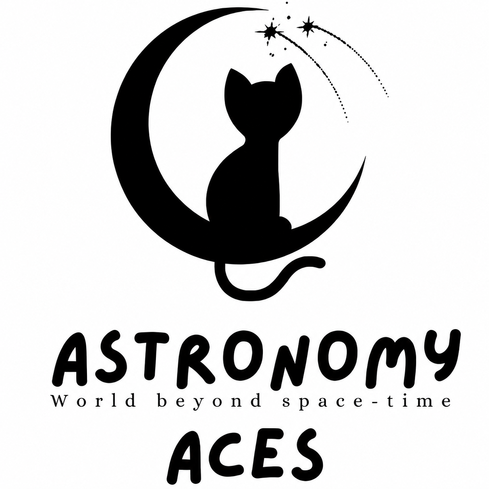

ASTRONOMY ACES
A student space for curiosity, observation, and exploration.

A platform for students who are drawn to astronomy, astrophysics, space science, observation, scientific discussion, experimentation, and exploration.
The club
Astronomy Aces is associated with the Physics Department at Thakur College of Science and Commerce. The club creates room for students to approach the universe through scientific curiosity and shared inquiry.
Its focus is on astronomy and space science: observing, asking better questions, discussing ideas, exploring astrophysical concepts, and engaging with interactive learning experiences.
Looking outward with care for the details that evidence reveals.
Making space for ideas, questions, and scientific conversation.
Connecting curiosity with experiments, models, and learning.
Our connection
Each point supplies a different reference frame: a club for curiosity, a department for scientific foundation, and a college for academic context.
A student space for curiosity, observation, and exploration.
The department that anchors questions about the universe in physics.
The academic environment in which the club belongs.
Follow our orbit
Follow Astronomy Aces for the club’s official updates when its Instagram link is added to the site configuration.
Find the club’s official presence and follow its orbit.
Instagram URL placeholder: add the official account URL in site-config.js. No account link has been invented.